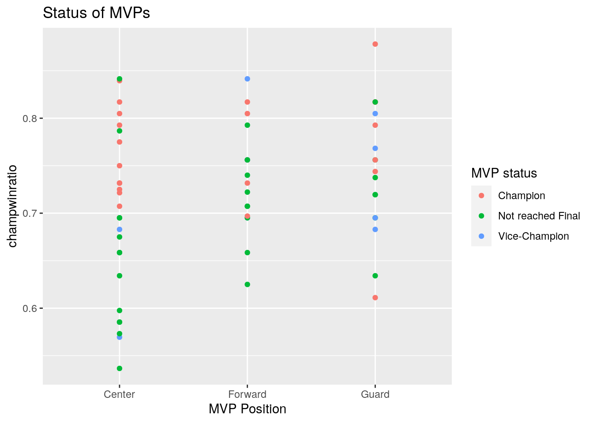
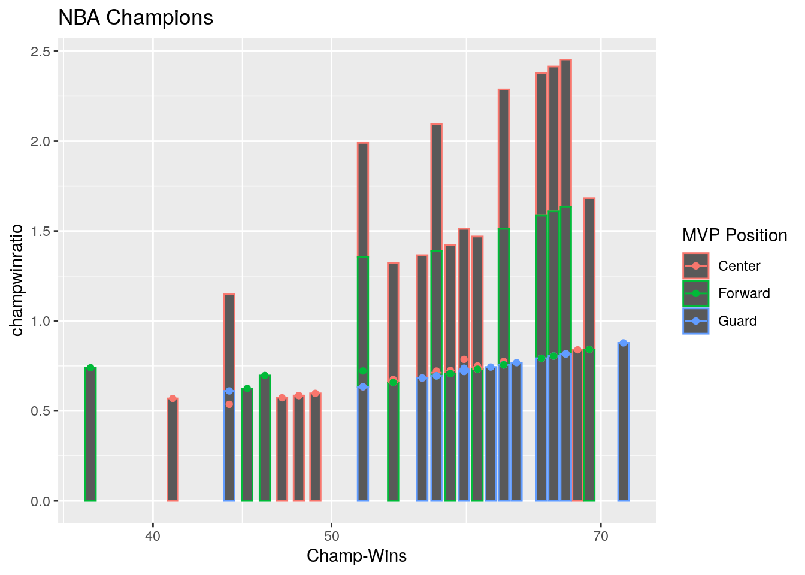
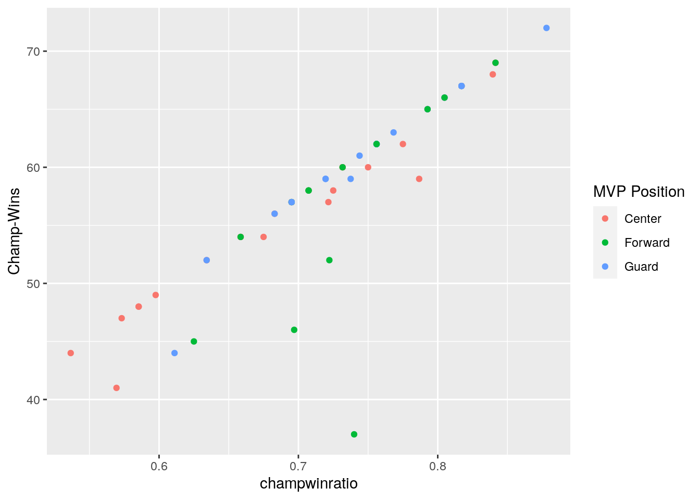

library(readxl)
library(dplyr)##
## Attaching package: 'dplyr'## The following objects are masked from 'package:stats':
##
## filter, lag## The following objects are masked from 'package:base':
##
## intersect, setdiff, setequal, unionlibrary(ggplot2)
library(knitr)
library(tidyverse)## ── Attaching packages ────────────────────────────── tidyverse 1.3.0 ──## ✔ tibble 2.1.3 ✔ purrr 0.3.3
## ✔ tidyr 1.0.2 ✔ stringr 1.4.0
## ✔ readr 1.3.1 ✔ forcats 0.4.0## ── Conflicts ───────────────────────────────── tidyverse_conflicts() ──
## ✖ dplyr::filter() masks stats::filter()
## ✖ dplyr::lag() masks stats::lag()NBA_Finals<-read_excel("NBA Finals.xlsx")
NBA_Awards<-read_excel("NBA Awards.xlsx")
NBA_Finals## # A tibble: 62 x 7
## Year `NBA Champion` `Champ-Wins` `Champ-Losses` Loser `Loser-Wins`
## <dbl> <chr> <dbl> <dbl> <chr> <dbl>
## 1 1956 Philadelphia … 45 27 Fort… 37
## 2 1957 Boston Celtics 44 28 St. … 34
## 3 1958 St. Louis Haw… 41 31 Bost… 49
## 4 1959 Boston Celtics 52 20 Minn… 33
## 5 1960 Boston Celtics 59 16 St. … 46
## 6 1961 Boston Celtics 57 22 St. … 51
## 7 1962 Boston Celtics 60 20 Los … 54
## 8 1963 Boston Celtics 58 22 Los … 53
## 9 1964 Boston Celtics 59 21 San … 48
## 10 1965 Boston Celtics 62 18 Los … 49
## # … with 52 more rows, and 1 more variable: `Loser-Losses` <dbl>NBA_Awards## # A tibble: 62 x 9
## Year `Western Champi… `Eastern Champi… Result `NBA Champion` `MVP Name`
## <dbl> <chr> <chr> <chr> <chr> <chr>
## 1 1956 Fort Wayne Pist… Philadelphia Wa… 1–4 Philadelphia … B. Pettit
## 2 1957 St. Louis Hawks Boston Celtics 3–4 Boston Celtics B. Cousy
## 3 1958 St. Louis Hawks Boston Celtics 4–2 St. Louis Haw… B. Russell
## 4 1959 Minneapolis Lak… Boston Celtics 0–4 Boston Celtics B. Pettit
## 5 1960 St. Louis Hawks Boston Celtics 3–4 Boston Celtics W. Chambe…
## 6 1961 St. Louis Hawks Boston Celtics 1–4 Boston Celtics B. Russell
## 7 1962 Los Angeles Lak… Boston Celtics 3–4 Boston Celtics B. Russell
## 8 1963 Los Angeles Lak… Boston Celtics 2–4 Boston Celtics B. Russell
## 9 1964 San Francisco W… Boston Celtics 1–4 Boston Celtics O. Robert…
## 10 1965 Los Angeles Lak… Boston Celtics 1–4 Boston Celtics B. Russell
## # … with 52 more rows, and 3 more variables: `MVP Position` <chr>, `MVP
## # Team` <chr>, `MVP status` <chr>NBA_Finals%>%pivot_wider(names_from="NBA Champion",values_from="Year")## # A tibble: 62 x 23
## `Champ-Wins` `Champ-Losses` Loser `Loser-Wins` `Loser-Losses`
## <dbl> <dbl> <chr> <dbl> <dbl>
## 1 45 27 Fort… 37 35
## 2 44 28 St. … 34 38
## 3 41 31 Bost… 49 23
## 4 52 20 Minn… 33 39
## 5 59 16 St. … 46 29
## 6 57 22 St. … 51 28
## 7 60 20 Los … 54 26
## 8 58 22 Los … 53 27
## 9 59 21 San … 48 32
## 10 62 18 Los … 49 31
## # … with 52 more rows, and 18 more variables: `Philadelphia Warriors` <dbl>,
## # `Boston Celtics` <dbl>, `St. Louis Hawks` <dbl>, `Philadelphia
## # 76ers` <dbl>, `New York Knicks` <dbl>, `Milwaukee Bucks` <dbl>, `Los
## # Angeles Lakers` <dbl>, `Golden State Warriors` <dbl>, `Portland Trail
## # Blazers` <dbl>, `Washington Bullets` <dbl>, `Seattle SuperSonics` <dbl>,
## # `Detroit Pistons` <dbl>, `Chicago Bulls` <dbl>, `Houston Rockets` <dbl>,
## # `San Antonio Spurs` <dbl>, `Miami Heat` <dbl>, `Dallas Mavericks` <dbl>,
## # `Cleveland Cavaliers` <dbl>## I untidied the data by using pivot wider and tidied again by using pivot longer.
NBA_Finals %>% full_join(NBA_Awards)## Joining, by = c("Year", "NBA Champion")## # A tibble: 62 x 14
## Year `NBA Champion` `Champ-Wins` `Champ-Losses` Loser `Loser-Wins`
## <dbl> <chr> <dbl> <dbl> <chr> <dbl>
## 1 1956 Philadelphia … 45 27 Fort… 37
## 2 1957 Boston Celtics 44 28 St. … 34
## 3 1958 St. Louis Haw… 41 31 Bost… 49
## 4 1959 Boston Celtics 52 20 Minn… 33
## 5 1960 Boston Celtics 59 16 St. … 46
## 6 1961 Boston Celtics 57 22 St. … 51
## 7 1962 Boston Celtics 60 20 Los … 54
## 8 1963 Boston Celtics 58 22 Los … 53
## 9 1964 Boston Celtics 59 21 San … 48
## 10 1965 Boston Celtics 62 18 Los … 49
## # … with 52 more rows, and 8 more variables: `Loser-Losses` <dbl>, `Western
## # Champion` <chr>, `Eastern Champion` <chr>, Result <chr>, `MVP Name` <chr>,
## # `MVP Position` <chr>, `MVP Team` <chr>, `MVP status` <chr>NBAfinalawards <- NBA_Finals %>% full_join(NBA_Awards)## Joining, by = c("Year", "NBA Champion")No variables in this join were dropped. I chose this join because I want all the variables to be included in the joined dataset.
NBAfinalawards %>% filter(`MVP status`=="Champion")## # A tibble: 23 x 14
## Year `NBA Champion` `Champ-Wins` `Champ-Losses` Loser `Loser-Wins`
## <dbl> <chr> <dbl> <dbl> <chr> <dbl>
## 1 1957 Boston Celtics 44 28 St. … 34
## 2 1961 Boston Celtics 57 22 St. … 51
## 3 1962 Boston Celtics 60 20 Los … 54
## 4 1963 Boston Celtics 58 22 Los … 53
## 5 1965 Boston Celtics 62 18 Los … 49
## 6 1967 Philadelphia … 68 13 San … 44
## 7 1970 New York Knic… 60 22 Los … 46
## 8 1971 Milwaukee Buc… 66 16 Balt… 42
## 9 1980 Los Angeles L… 60 22 Phil… 59
## 10 1983 Philadelphia … 65 17 Los … 58
## # … with 13 more rows, and 8 more variables: `Loser-Losses` <dbl>, `Western
## # Champion` <chr>, `Eastern Champion` <chr>, Result <chr>, `MVP Name` <chr>,
## # `MVP Position` <chr>, `MVP Team` <chr>, `MVP status` <chr>NBAfinalawards %>% arrange(`Champ-Wins`)## # A tibble: 62 x 14
## Year `NBA Champion` `Champ-Wins` `Champ-Losses` Loser `Loser-Wins`
## <dbl> <chr> <dbl> <dbl> <chr> <dbl>
## 1 1999 San Antonio S… 37 13 New … 27
## 2 1958 St. Louis Haw… 41 31 Bost… 49
## 3 1957 Boston Celtics 44 28 St. … 34
## 4 1978 Washington Bu… 44 38 Seat… 47
## 5 1956 Philadelphia … 45 27 Fort… 37
## 6 2012 Miami Heat 46 20 Okla… 48
## 7 1995 Houston Rocke… 47 35 Orla… 57
## 8 1969 Boston Celtics 48 34 Los … 55
## 9 1975 Golden State … 48 34 Wash… 60
## 10 1977 Portland Trai… 49 33 Phil… 50
## # … with 52 more rows, and 8 more variables: `Loser-Losses` <dbl>, `Western
## # Champion` <chr>, `Eastern Champion` <chr>, Result <chr>, `MVP Name` <chr>,
## # `MVP Position` <chr>, `MVP Team` <chr>, `MVP status` <chr>NBAfinalawards %>% select(Year,`NBA Champion`,`MVP Name`,`MVP Team`)## # A tibble: 62 x 4
## Year `NBA Champion` `MVP Name` `MVP Team`
## <dbl> <chr> <chr> <chr>
## 1 1956 Philadelphia Warriors B. Pettit Saint Louis Hawks
## 2 1957 Boston Celtics B. Cousy Boston Celtics
## 3 1958 St. Louis Hawks B. Russell Boston Celtics
## 4 1959 Boston Celtics B. Pettit Saint Louis Hawks
## 5 1960 Boston Celtics W. Chamberlain Philadelphia Warriors
## 6 1961 Boston Celtics B. Russell Boston Celtics
## 7 1962 Boston Celtics B. Russell Boston Celtics
## 8 1963 Boston Celtics B. Russell Boston Celtics
## 9 1964 Boston Celtics O. Robertson Cincinnati Royals
## 10 1965 Boston Celtics B. Russell Boston Celtics
## # … with 52 more rowsNBAfinalawards$`Champ-Wins` <- as.numeric(NBAfinalawards$`Champ-Wins`)
NBAfinalawards <- NBAfinalawards %>% mutate(champwinratio = `Champ-Wins`/ (`Champ-Wins` + `Champ-Losses`))
NBAfinalawards %>% summarize(mean(`Champ-Wins`)) ## # A tibble: 1 x 1
## `mean(\`Champ-Wins\`)`
## <dbl>
## 1 58.1NBAfinalawards %>% summarize(sd(`Champ-Wins`)) ## # A tibble: 1 x 1
## `sd(\`Champ-Wins\`)`
## <dbl>
## 1 7.54NBAfinalawards %>% summarize(max(`Champ-Wins`)) ## # A tibble: 1 x 1
## `max(\`Champ-Wins\`)`
## <dbl>
## 1 72NBAfinalawards %>% filter(`NBA Champion`== "Los Angeles Lakers") %>% summarize(mean(`Champ-Wins`))## # A tibble: 1 x 1
## `mean(\`Champ-Wins\`)`
## <dbl>
## 1 61.6NBAfinalawards %>% group_by(`MVP Team`) %>% summarize(median(champwinratio))## # A tibble: 22 x 2
## `MVP Team` `median(champwinratio)`
## <chr> <dbl>
## 1 Baltimore Bullets 0.585
## 2 Boston Celtics 0.738
## 3 Buffalo Braves 0.585
## 4 Chicago Bulls 0.756
## 5 Cincinnati Royals 0.738
## 6 Cleveland Cavaliers 0.744
## 7 Dallas Mavericks 0.707
## 8 Golden State Warriors 0.756
## 9 Houston Rockets 0.695
## 10 Los Angeles Lakers 0.75
## # … with 12 more rowsNBAfinalawards %>% group_by(`MVP Position`) %>% summarize(mean(champwinratio))## # A tibble: 3 x 2
## `MVP Position` `mean(champwinratio)`
## <chr> <dbl>
## 1 Center 0.699
## 2 Forward 0.737
## 3 Guard 0.747NBAfinalawards %>% group_by(`NBA Champion`,Loser) %>% summarize(median(champwinratio))## # A tibble: 44 x 3
## # Groups: NBA Champion [18]
## `NBA Champion` Loser `median(champwinratio)`
## <chr> <chr> <dbl>
## 1 Boston Celtics Houston Rockets 0.787
## 2 Boston Celtics Los Angeles Lakers 0.738
## 3 Boston Celtics Milwaukee Bucks 0.683
## 4 Boston Celtics Minneapolis Lakers 0.722
## 5 Boston Celtics Phoenix Suns 0.659
## 6 Boston Celtics San Francisco Warriors 0.738
## 7 Boston Celtics St. Louis Hawks 0.722
## 8 Chicago Bulls Los Angeles Lakers 0.744
## 9 Chicago Bulls Phoenix Suns 0.695
## 10 Chicago Bulls Portland Trail Blazers 0.817
## # … with 34 more rowsNBAfinalawards %>% summarize(max(`Loser-Wins`))## # A tibble: 1 x 1
## `max(\`Loser-Wins\`)`
## <dbl>
## 1 73NBAfinalawards %>% summarize(min(`Champ-Wins`))## # A tibble: 1 x 1
## `min(\`Champ-Wins\`)`
## <dbl>
## 1 37NBAfinalawards %>% filter(`MVP Name` == "S. Curry") %>% summarize(max(`Champ-Wins`))## # A tibble: 1 x 1
## `max(\`Champ-Wins\`)`
## <dbl>
## 1 67NBAfinalawards %>% filter(`MVP Name` == "S. Curry") %>% summarize(mean(`Champ-Wins`))## # A tibble: 1 x 1
## `mean(\`Champ-Wins\`)`
## <dbl>
## 1 62In the first function, I found what mean number of regular season wins was for a NBA champion. In the second function, I found out what the standard deviation of regular seaason wins was for NBA champion. In the third function, I found out what the maximum number of regular season wins was for a NBA Champion. In the fourth function, I found the mean number of wins for the Lakers whent they won a championship. In the fifth function, I found the median winratio for every MVP Team. In the sixth function, I found the winratio for championships in every MVP position which were guards. I also found that the Celtics had the highest championship win ratio. The most wins for a losing team was 73 games in 2016. The least number of wins for a championship team was 37.
df <- NBAfinalawards %>% select_if(is.numeric)
cor(df)## Year Champ-Wins Champ-Losses Loser-Wins Loser-Losses
## Year 1.0000000 0.27295698 -0.20727994 0.43692275 -0.43748818
## Champ-Wins 0.2729570 1.00000000 -0.74422388 0.40434660 -0.05216915
## Champ-Losses -0.2072799 -0.74422388 1.00000000 0.02081767 0.06125185
## Loser-Wins 0.4369227 0.40434660 0.02081767 1.00000000 -0.78089921
## Loser-Losses -0.4374882 -0.05216915 0.06125185 -0.78089921 1.00000000
## champwinratio 0.2504473 0.87847182 -0.97163779 0.12823123 -0.06470612
## champwinratio
## Year 0.25044734
## Champ-Wins 0.87847182
## Champ-Losses -0.97163779
## Loser-Wins 0.12823123
## Loser-Losses -0.06470612
## champwinratio 1.00000000tidycor <- cor(df) %>% as.data.frame()
head(tidycor)## Year Champ-Wins Champ-Losses Loser-Wins Loser-Losses
## Year 1.0000000 0.27295698 -0.20727994 0.43692275 -0.43748818
## Champ-Wins 0.2729570 1.00000000 -0.74422388 0.40434660 -0.05216915
## Champ-Losses -0.2072799 -0.74422388 1.00000000 0.02081767 0.06125185
## Loser-Wins 0.4369227 0.40434660 0.02081767 1.00000000 -0.78089921
## Loser-Losses -0.4374882 -0.05216915 0.06125185 -0.78089921 1.00000000
## champwinratio 0.2504473 0.87847182 -0.97163779 0.12823123 -0.06470612
## champwinratio
## Year 0.25044734
## Champ-Wins 0.87847182
## Champ-Losses -0.97163779
## Loser-Wins 0.12823123
## Loser-Losses -0.06470612
## champwinratio 1.00000000ggplot(NBAfinalawards, aes(`MVP Position`, champwinratio, color = `MVP status`)) + geom_point() + ggtitle("Status of MVPs")
ggplot(NBAfinalawards, aes(`Champ-Wins`,champwinratio, color = `MVP Position`)) + geom_bar(stat = "summary", fun.y = "mean")+ geom_errorbar(stat = "summary") + geom_point() + ggtitle("NBA Champions") + scale_x_log10() ## Warning: Ignoring unknown parameters: fun.y## No summary function supplied, defaulting to `mean_se()`
## No summary function supplied, defaulting to `mean_se()`
The champions that win have the highest championship win ratio. It also seems that the guard position reaches the most NBA finals but does not win the most. The center position MVP has actually won the most. It also seems that centers reach the finals the most while getting the most regular season wins according to the second graph.
library(cluster)
pam1 <- NBAfinalawards %>% pam(k=3)## Warning in data.matrix(x): NAs introduced by coercion
## Warning in data.matrix(x): NAs introduced by coercion
## Warning in data.matrix(x): NAs introduced by coercion
## Warning in data.matrix(x): NAs introduced by coercion
## Warning in data.matrix(x): NAs introduced by coercion
## Warning in data.matrix(x): NAs introduced by coercion
## Warning in data.matrix(x): NAs introduced by coercion
## Warning in data.matrix(x): NAs introduced by coercion
## Warning in data.matrix(x): NAs introduced by coercionpam1## Medoids:
## ID Year NBA Champion Champ-Wins Champ-Losses Loser Loser-Wins Loser-Losses
## [1,] 9 1964 NA 59 21 NA 48 32
## [2,] 34 1989 NA 63 19 NA 57 25
## [3,] 50 2005 NA 59 23 NA 54 28
## Western Champion Eastern Champion Result MVP Name MVP Position MVP Team
## [1,] NA NA NA NA NA NA
## [2,] NA NA NA NA NA NA
## [3,] NA NA NA NA NA NA
## MVP status champwinratio
## [1,] NA 0.7375000
## [2,] NA 0.7682927
## [3,] NA 0.7195122
## Clustering vector:
## [1] 1 1 1 1 1 1 1 1 1 1 1 1 1 1 1 1 1 1 2 1 1 1 1 2 2 1 2 2 2 2 2 2 2 2 2 2 2 2
## [39] 2 3 2 2 2 3 2 3 3 3 3 3 3 3 3 3 3 3 3 3 3 3 3 3
## Objective function:
## build swap
## 20.55976 19.97377
##
## Available components:
## [1] "medoids" "id.med" "clustering" "objective" "isolation"
## [6] "clusinfo" "silinfo" "diss" "call" "data"pamclust<-NBAfinalawards %>% mutate(cluster=as.factor(pam1$clustering))
pamclust %>% ggplot(aes(champwinratio,`Champ-Wins`,color=`MVP Position`)) + geom_point() The guard positions have the highest championship win ratios.